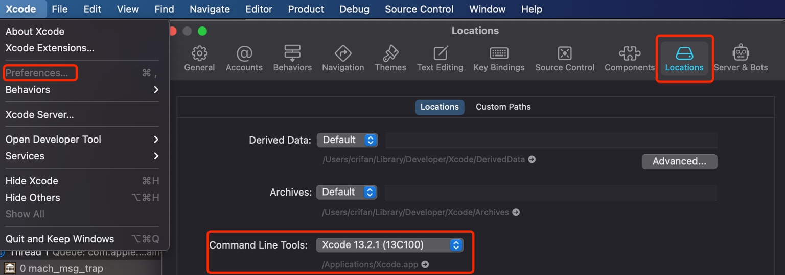

Command Line Tools
TODO：
- 【已解决】Mac中已登录苹果开发者账号点击下载Command Line Tool提示Unauthorized没权限
Xcode，除了有图形界面的UI外，还额外提供了一些，基于命令行的各种工具=Command Line Tools
Command Line Tools- 是什么：
Xcode的基于命令行的各种命令行工具。 - 安装位置：
/Library/Developer/CommandLineTools/ - 包含哪些
- 命令行工具
xcodebuildxcrun- 各种子命令
clang=Apple LLVM compiler- linker
- Make
- 等
- macOS SDK和头文件header
- 命令行工具
- Xcode界面中会提到
Xcode->Preferences->Locations->Locations->Command Line Tools: 此处是Xcode 13.2.1 (13C100)- 
- 是什么：
包含的全部命令
更多的命令，详见：
/Applications/Xcode.app/Contents/Developer/Toolchains/XcodeDefault.xctoolchain/usr/bin
举例：
ll /Applications/Xcode.app/Contents/Developer/Toolchains/XcodeDefault.xctoolchain/usr/bin
total 800272
-rwxr-xr-x 1 crifan staff 265K 12 15 2021 air-ar
-rwxr-xr-x 1 crifan staff 265K 12 15 2021 air-as
-rwxr-xr-x 1 crifan staff 265K 12 15 2021 air-dsymutil
-rwxr-xr-x 1 crifan staff 265K 12 15 2021 air-libtool
-rwxr-xr-x 1 crifan staff 265K 12 15 2021 air-link
-rwxr-xr-x 1 crifan staff 265K 12 15 2021 air-lipo
-rwxr-xr-x 1 crifan staff 265K 12 15 2021 air-lld
-rwxr-xr-x 1 crifan staff 265K 12 15 2021 air-nm
-rwxr-xr-x 1 crifan staff 265K 12 15 2021 air-objdump
lrwxr-xr-x 1 crifan staff 6B 6 28 20:26 air-ranlib -> air-ar
-rwxr-xr-x 1 crifan staff 265K 12 15 2021 air-readobj
-rwxr-xr-x 1 crifan staff 265K 12 15 2021 air-size
-rwxr-xr-x 1 crifan staff 168K 12 15 2021 ar
-rwxr-xr-x 1 crifan staff 150K 12 15 2021 as
-rwxr-xr-x 1 crifan staff 163K 12 15 2021 asa
-rwxr-xr-x 1 crifan staff 520K 12 15 2021 bison
-rwxr-xr-x 1 crifan staff 434K 12 15 2021 bitcode_strip
lrwxr-xr-x 1 crifan staff 5B 6 28 20:27 c++ -> clang
lrwxr-xr-x 1 crifan staff 12B 6 28 20:27 c++filt -> llvm-cxxfilt
-rwxr-xr-x 1 crifan staff 164K 12 15 2021 c89
-rwxr-xr-x 1 crifan staff 164K 12 15 2021 c99
lrwxr-xr-x 1 crifan staff 5B 6 28 20:27 cc -> clang
-rwxr-xr-x 1 crifan staff 181M 12 15 2021 clang
lrwxr-xr-x 1 crifan staff 5B 6 28 20:27 clang++ -> clang
-rwxr-xr-x 1 crifan staff 80M 12 15 2021 clangd
-rwxr-xr-x 1 crifan staff 350K 12 15 2021 cmpdylib
-rwxr-xr-x 1 crifan staff 382K 12 15 2021 codesign_allocate
lrwxr-xr-x 1 crifan staff 17B 6 28 20:27 codesign_allocate-p -> codesign_allocate
lrwxr-xr-x 1 crifan staff 14B 6 28 20:27 coremlc -> coremlcompiler
-rwxr-xr-x 1 crifan staff 20M 12 15 2021 coremlcompiler
-rwxr-xr-x 1 crifan staff 3.3K 10 26 2021 cpp
-rwxr-xr-x 1 crifan staff 164K 12 15 2021 ctags
-rwxr-xr-x 1 crifan staff 433K 12 15 2021 ctf_insert
-rwxr-xr-x 1 crifan staff 19M 12 15 2021 docc
-rwxr-xr-x 1 crifan staff 61M 12 15 2021 dsymutil
lrwxr-xr-x 1 crifan staff 14B 6 28 20:28 dwarfdump -> llvm-dwarfdump
-rwxr-xr-x 1 crifan staff 1.5M 12 15 2021 dwarfdump-classic
-rwxr-xr-x 1 crifan staff 497K 12 15 2021 dyldinfo
-rwxr-xr-x 2 crifan staff 681K 12 15 2021 flex
-rwxr-xr-x 2 crifan staff 681K 12 15 2021 flex++
lrwxr-xr-x 1 crifan staff 8B 6 28 20:29 gcov -> llvm-cov
-rwxr-xr-x 2 crifan staff 392K 12 15 2021 gm4
-rwxr-xr-x 1 crifan staff 294K 12 15 2021 gperf
-rwxr-xr-x 1 crifan staff 267K 12 15 2021 iig
-rwxr-xr-x 1 crifan staff 229K 12 15 2021 indent
-rwxr-xr-x 1 crifan staff 433K 12 15 2021 install_name_tool
-rwxr-xr-x 1 crifan staff 5.6M 12 15 2021 ld
-rwxr-xr-x 1 crifan staff 230B 10 26 2021 lex
-rwxr-xr-x 1 crifan staff 434K 12 15 2021 libtool
-rwxr-xr-x 1 crifan staff 253K 12 15 2021 lipo
-rwxr-xr-x 1 crifan staff 8.2M 12 15 2021 llvm-cov
-rwxr-xr-x 1 crifan staff 859K 12 15 2021 llvm-cxxfilt
-rwxr-xr-x 1 crifan staff 17M 12 15 2021 llvm-dwarfdump
-rwxr-xr-x 1 crifan staff 20M 12 15 2021 llvm-nm
-rwxr-xr-x 1 crifan staff 23M 12 15 2021 llvm-objdump
-rwxr-xr-x 1 crifan staff 184K 12 15 2021 llvm-otool
-rwxr-xr-x 1 crifan staff 3.6M 12 15 2021 llvm-profdata
-rwxr-xr-x 1 crifan staff 6.7M 12 15 2021 llvm-size
-rwxr-xr-x 1 crifan staff 3.5K 10 26 2021 lorder
-rwxr-xr-x 2 crifan staff 392K 12 15 2021 m4
-rwxr-xr-x 1 crifan staff 265K 12 15 2021 metal
lrwxr-xr-x 1 crifan staff 6B 6 28 20:32 metal-ar -> air-ar
lrwxr-xr-x 1 crifan staff 6B 6 28 20:32 metal-as -> air-as
lrwxr-xr-x 1 crifan staff 12B 6 28 20:32 metal-dsymutil -> air-dsymutil
lrwxr-xr-x 1 crifan staff 11B 6 28 20:32 metal-libtool -> air-libtool
lrwxr-xr-x 1 crifan staff 8B 6 28 20:32 metal-link -> air-link
lrwxr-xr-x 1 crifan staff 8B 6 28 20:32 metal-lipo -> air-lipo
lrwxr-xr-x 1 crifan staff 7B 6 28 20:32 metal-lld -> air-lld
lrwxr-xr-x 1 crifan staff 6B 6 28 20:32 metal-nm -> air-nm
lrwxr-xr-x 1 crifan staff 11B 6 28 20:32 metal-objdump -> air-objdump
lrwxr-xr-x 1 crifan staff 10B 6 28 20:32 metal-ranlib -> air-ranlib
lrwxr-xr-x 1 crifan staff 11B 6 28 20:32 metal-readobj -> air-readobj
lrwxr-xr-x 1 crifan staff 8B 6 28 20:32 metal-size -> air-size
-rwxr-xr-x 1 crifan staff 265K 12 15 2021 metal-source
lrwxr-xr-x 1 crifan staff 7B 6 28 20:32 metallib -> air-lld
-rwxr-xr-x 1 crifan staff 7.7K 10 26 2021 mig
lrwxr-xr-x 1 crifan staff 7B 6 28 20:32 nm -> llvm-nm
-rwxr-xr-x 1 crifan staff 383K 12 15 2021 nm-classic
-rwxr-xr-x 1 crifan staff 467K 12 15 2021 nmedit
lrwxr-xr-x 1 crifan staff 12B 6 28 20:32 objdump -> llvm-objdump
lrwxr-xr-x 1 crifan staff 10B 6 28 20:32 otool -> llvm-otool
-rwxr-xr-x 1 crifan staff 1.4M 12 15 2021 otool-classic
-rwxr-xr-x 1 crifan staff 382K 12 15 2021 pagestuff
lrwxr-xr-x 1 crifan staff 7B 6 28 20:33 ranlib -> libtool
-rwxr-xr-x 1 crifan staff 261K 12 15 2021 rpcgen
-rwxr-xr-x 1 crifan staff 186K 12 15 2021 segedit
lrwxr-xr-x 1 crifan staff 12B 6 28 20:33 size -> size-classic
-rwxr-xr-x 1 crifan staff 349K 12 15 2021 size-classic
-rwxr-xr-x 1 crifan staff 30M 12 15 2021 sourcekit-lsp
-rwxr-xr-x 1 crifan staff 350K 12 15 2021 strings
-rwxr-xr-x 1 crifan staff 520K 12 15 2021 strip
lrwxr-xr-x 1 crifan staff 14B 6 28 20:33 swift -> swift-frontend
lrwxr-xr-x 1 crifan staff 14B 6 28 20:33 swift-api-digester -> swift-frontend
lrwxr-xr-x 1 crifan staff 14B 6 28 20:33 swift-api-extract -> swift-frontend
-rwxr-xr-x 1 crifan staff 59M 12 15 2021 swift-build
-rwxr-xr-x 1 crifan staff 1.4M 12 15 2021 swift-build-tool
-rwxr-xr-x 1 crifan staff 1.3M 12 15 2021 swift-demangle
-rwxr-xr-x 1 crifan staff 26M 12 15 2021 swift-driver
-rwxr-xr-x 1 crifan staff 214M 12 15 2021 swift-frontend
-rwxr-xr-x 1 crifan staff 11M 12 15 2021 swift-help
-rwxr-xr-x 1 crifan staff 59M 12 15 2021 swift-package
-rwxr-xr-x 1 crifan staff 59M 12 15 2021 swift-package-collection
-rwxr-xr-x 1 crifan staff 59M 12 15 2021 swift-run
-rwxr-xr-x 1 crifan staff 185K 12 15 2021 swift-stdlib-tool
lrwxr-xr-x 1 crifan staff 14B 6 28 20:34 swift-symbolgraph-extract -> swift-frontend
-rwxr-xr-x 1 crifan staff 59M 12 15 2021 swift-test
lrwxr-xr-x 1 crifan staff 14B 6 28 20:34 swiftc -> swift-frontend
-rwxr-xr-x 1 crifan staff 33M 12 15 2021 tapi
-rwxr-xr-x 1 crifan staff 3.1M 12 15 2021 tapi-analyze
-rwxr-xr-x 1 crifan staff 165K 12 15 2021 unifdef
-rwxr-xr-x 1 crifan staff 2.9K 10 26 2021 unifdefall
-rwxr-xr-x 1 crifan staff 203K 12 15 2021 unwinddump
-rwxr-xr-x 1 crifan staff 220K 12 15 2021 vtool
-rwxr-xr-x 1 crifan staff 135B 10 26 2021 yacc
子命令举例
- clang
clang -v
Apple clang version 13.0.0 (clang-1300.0.29.30)
Target: x86_64-apple-darwin20.6.0
Thread model: posix
InstalledDir: /Applications/Xcode.app/Contents/Developer/Toolchains/XcodeDefault.xctoolchain/usr/bin
- gcc
gcc -v
Configured with: --prefix=/Applications/Xcode.app/Contents/Developer/usr --with-gxx-include-dir=/Applications/Xcode.app/Contents/Developer/Platforms/MacOSX.platform/Developer/SDKs/MacOSX.sdk/usr/include/c++/4.2.1
Apple clang version 13.0.0 (clang-1300.0.29.30)
Target: x86_64-apple-darwin20.6.0
Thread model: posix
InstalledDir: /Applications/Xcode.app/Contents/Developer/Toolchains/XcodeDefault.xctoolchain/usr/bin